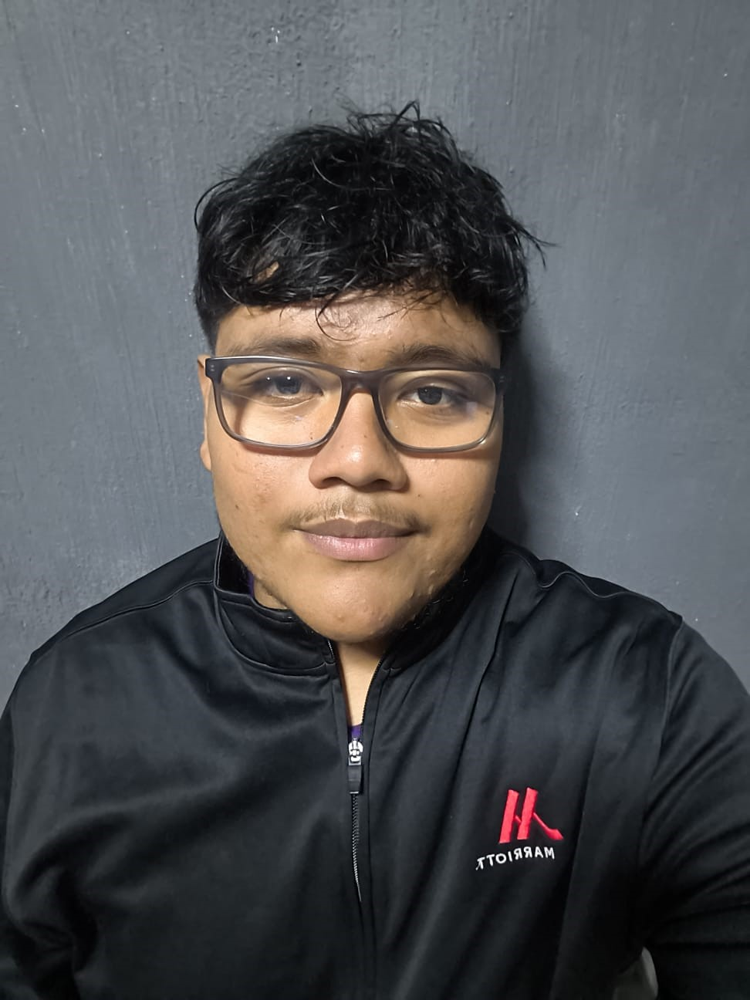
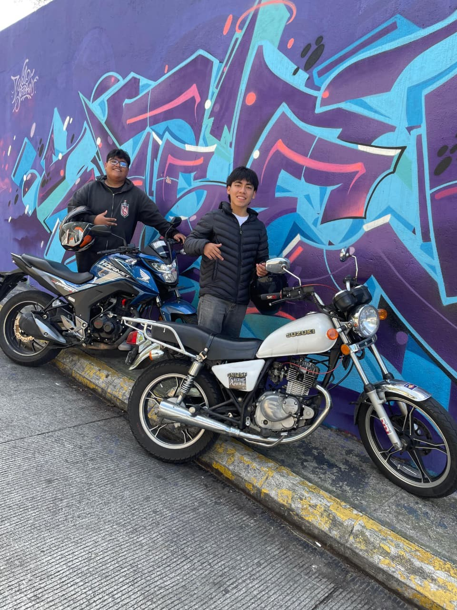
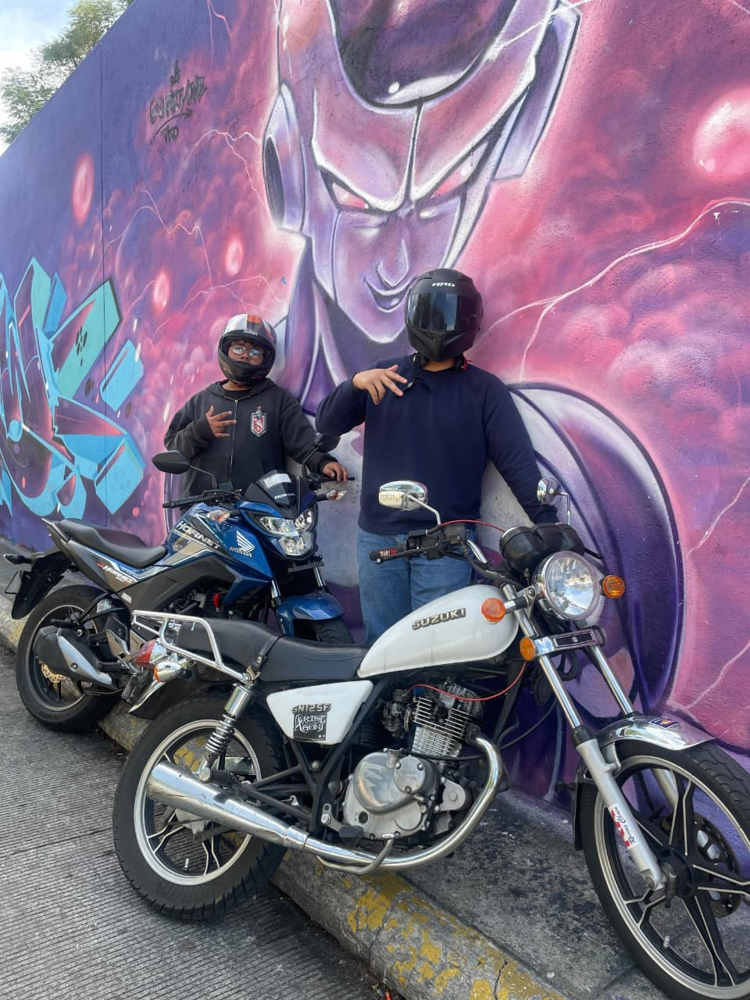

Mi nombre es Denis Ismael Ramirez Aguilar, Naci el 23 de Septiembre del 2007 en la ciudad de guatemala.
Vivo con mi padre y mi hermano, tengo 3 hermanos y una hermana. mi residencia es en Cuidad Quetzal, me considero una persona humilde, responsable y amigable.
Desde muy pequeño me ha gustado todo lo relacionado con computadoras, tecnologia, internet y motos. Me gusta aprender cosas nuevas
y luego aplicarlas en mis dias. Actualmente soy una persona que se esfuerza por mejorar todos los dias, tanto en los aspectos personales
como academios. Siempre trato de dar lo mejor de mi en cada actividad que realizo, ya que tengo deseos de superacion y cualidades que me
me hacen ser unico. Trato de ser disciplinado para conseguir los objetivos que tengo pensados a futuro. Me rodeo de buenos amigos con los
cuales estuvimos a pesar de las desgracias de la vida, mis amistades siempre han estado para mi como yo para ellos, me gusta convivir mucho con ellos,
normalmente nos juntamos los viernes y salimos a comer y a jugar futbol. Me gusta tener buena relacion con las personas y valoro mucho la
sinceridad y el respeto. Me gusta pasar mis tiempos libres jugando videojuegos y jugando futbol, tambien me gusta aprender de la tecnologia y conocer mas
sobre programas y algunas herramientas digitales. Algunos aspectos importantes y relevantes de mi personalidad es que soy muy serio en casi todos los casos,
me gusta plantearme metas y ponerme objetivos a corto plazo para enfocarme mucho mas en mi dia a dia, tambien soy alguien que valora mucho a su familia y
a sus amigos, me gusta compartir con mi familia y hacemos reuniones de cumpleañeros cada 3 meses para pasar tiempo juntos.
Soy alguien con muchos sueños y que se concentra mucho en el futuro y a veces el tener muchas cosas encima hace que me termine decepcionando de lo que no
me sale o puedo lograr. Tengo el deseo de aprender mucho mas cada dia y de poder mejorar como persona, creo que el apoyo de las personas cercanas es muy
importante para crecer y mantener una motivación constante para seguir adelante.


